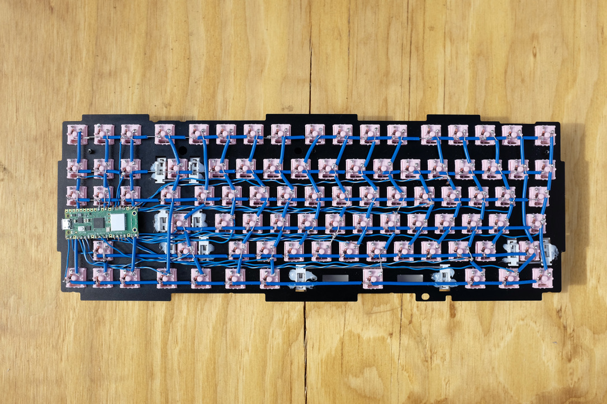
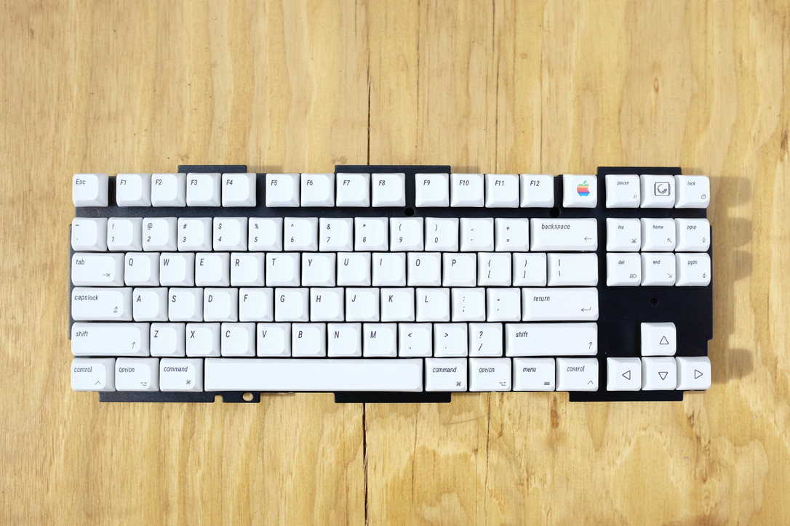
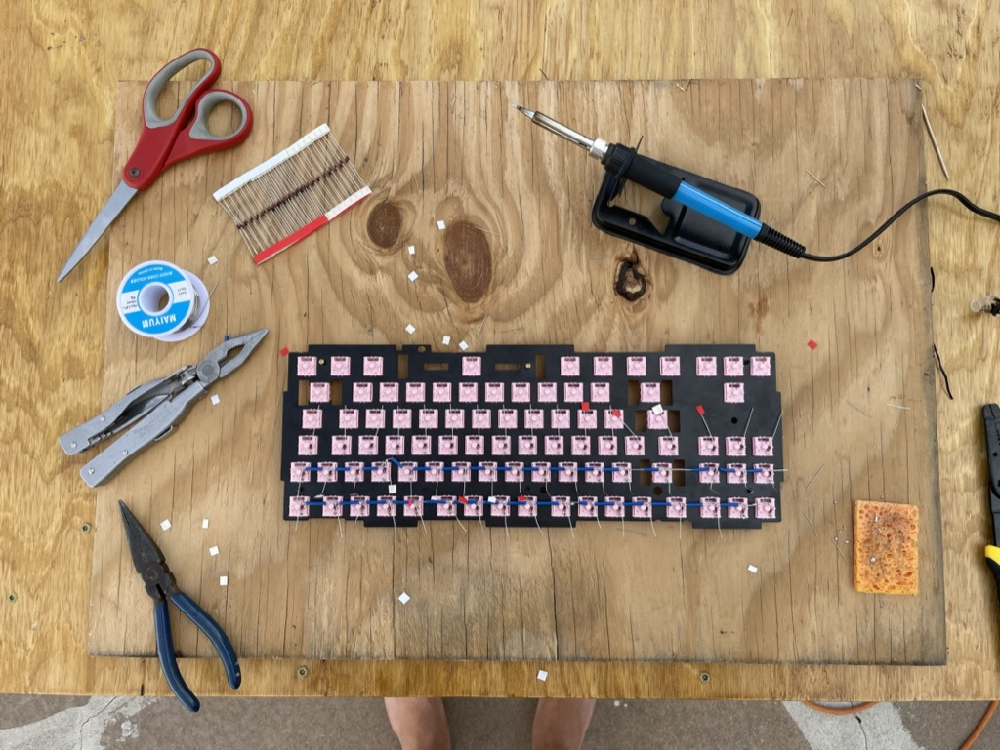
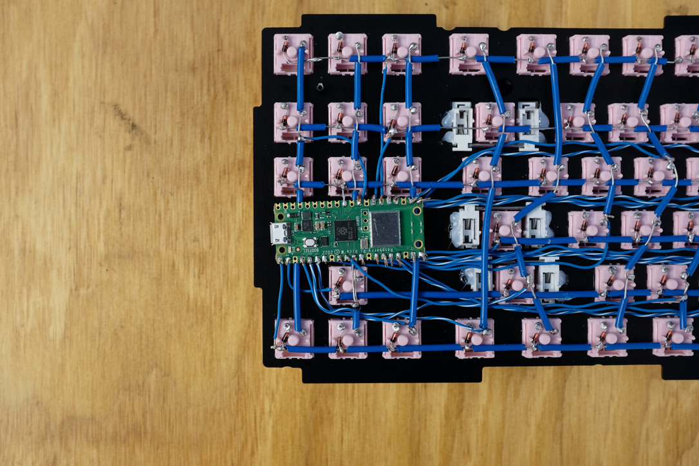

handwired keyboard 1
intro
This project started as a way to practice soldering. I also learned a lot about keyboards, the interesting bits highlighted below.


custom firmware
The biggest benefit of building this for me has been the custom firmware. Taking the time to customize a keymap and configure dynamic macros can be a huge efficiency improvement if you do lots of computer things. For example I store phrases that I type frequently behind key combinations, so I can press a couple keys to instantly type my email / password / zoom link. Or I’ll record a macro to reformat multiple lines in a csv file all at once.

how keyboards work
Anytime the raspberry pi receives power it is configured to run a main.py file saved on the board. That python script is just a loop that repeatedly checks whether any keys are in a depressed position.
To avoid actually wiring each individual key to a pin on the pi we create a keyboard matrix, columns and rows linking switches together. Each column and each row get wired to an individual pin on the pi.
So when the pi gets input on column 5 and row 4, the program checks the keymap for that intersection and sends the appropriate character to the machine.

References:
A modern handwiring guide - stronger, cleaner, easier (cribbit) A complete guide to building a handwired keyboard (Ben Chapman)